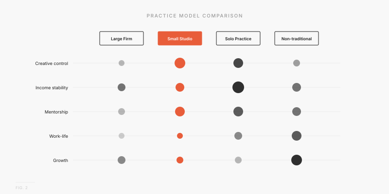
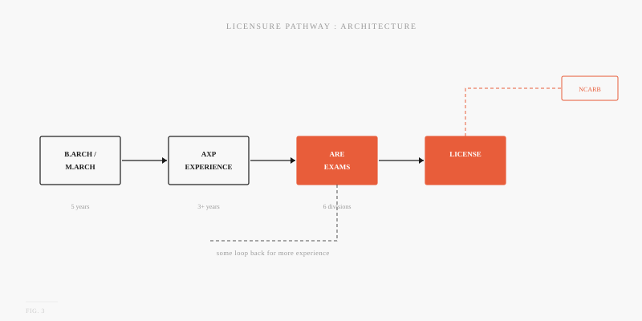
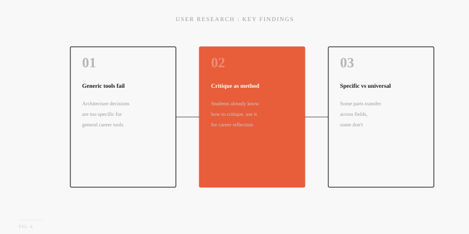
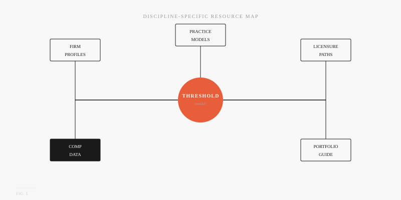

Threshold
- Author
- Seth Looper
- My role
- Founder and lead designer
- Setting
- Independent project, informed by the author's adjunct teaching at Kent State CAED; not reviewed or endorsed by Kent State
- Audience
- Architecture, landscape architecture, urban design
- Live at
- thresholdarch.com
- Period
- 2025–present
- Status
- Active
- Addresses
- RQ 5
- Methods used
- Critique-as-reflection
What this report argues, how far the evidence currently goes, and what would settle it. The lab states this up front so a reader can weigh the work honestly.
Architecture students learn to think spatially, critique, and iterate. But nobody teaches them how to make the personal decisions that actually shape a career: which firms to go after, when to leave practice, how to balance creative ambition with economic reality.
Generic career resources don't help. Architecture is different. Licensure, portfolio culture, firm hierarchies, and the tension between design and business create a set of pressures that general-purpose tools just don't address. Students graduate with strong technical skills and almost no framework for thinking about their own career options.
Threshold was built to fill that gap, a resource that speaks to the realities of architectural practice, not career advice in the abstract.

Threshold is a career toolkit with content and exercises designed for architecture, landscape architecture, and urban design. It comes from years of professional practice and studio teaching, the stuff generic career tools miss: the rhythms of architectural education, the economics of early-career practice, and the gap between what you learn in studio and what you face in a firm.
Instead of a 20-minute advising meeting, Threshold gives students a place to think. It combines real resources (firm profiles, practice models, licensure pathways) with exercises that help you figure out your own values and priorities before you start making career decisions.
Threshold is the lab's only discipline-specific tool. Its design rests on two traditions architects already know, and one they don't.
The toolkit's core move (critique-as-reflection on the career decision, not the student) ports Donald Schön's reflective practitioner framework (Schön, 1983; Schön, 1987) directly. Schön's account of how architectural studios teach, through public defense of the work, surfacing latent decisions, and treating the project as the object of inquiry rather than the student, is the canonical case of reflection-in-action. Threshold uses the muscle architecture students have already built in studio and points it at career deliberation. The lab's What architecture studios know about reflection note works through this in more depth.
The career-as-identity framing draws on Mark Savickas's Career Construction Theory (Savickas, 2005), which treats career decisions as identity construction rather than slot-filling. This matters specifically for architecture students, who tend to read traditional career-services language ("matching," "fit," "best-fit role") as a category error against the design-school identity formation they've actually been doing.
The discipline-specific design (vocabulary, examples, firm-type taxonomy, practice models) reflects the lab's working hypothesis that reflection methods are largely universal but reflection content is discipline-specific. Threshold is the lab's first test case of porting a method (compression, peer reflection, deliberation sequence) from a liberal-arts program (CDL at Dartmouth) into a professional discipline (architecture), informed by the author's teaching at Kent State CAED.
Full bibliography in the working paper.


Threshold started from years of being on both sides of the profession: practicing, advising students, and teaching in the studio. The first version was just a collection of resources organized by topic. Over time, it grew into something that combines those resources with reflection exercises, shaped by the same build-test-revise approach we use across the lab.
Threshold's design draws on the lead author's adjunct faculty role at CAED, design-team conversations with CAED faculty, and informal consultation with students in the lead author's courses and with practicing architects in the lab's professional network. It does not draw on formal interview research. The questions the platform is organized around were surfaced through that working context, not through an IRB-reviewed interview study.
One big insight: architecture students already know how to critique. They do it every day in studio. The exercises on Threshold had to work with that culture, not against it, using critique as a way to examine career decisions, not imposing some other framework.
Three things from building Threshold that changed how we think about field-specific tools:


Threshold is live at thresholdarch.com and works both as a standalone resource for architecture professionals and as a test case for our broader research into field-specific career tools. Students at multiple schools use it.
We're still adding to the resource library and improving the reflection exercises. The project has also pushed our thinking about whether this model works for other professions, fields where generic career tools fall just as short as they do in architecture.
Looper, S. (2026). Crit, Career, and Discipline: Threshold and the Test Case for Discipline-Specific Reflection Tooling. Lo/Be Lab Working Reports, 2026-05. [pdf]
See the full abstract on the publications page.
Material on this site may be cited and reused under CC BY-NC 4.0, with credit to Lo/Be Lab.
For citation requests, collaborations, or pushback on a published claim, seth.looper@gmail.com. Site licensed under CC BY-NC 4.0.